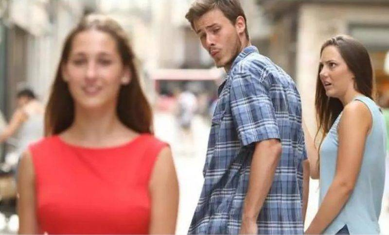

1. 分心男友
原始圖片
這張原本是由攝影師 Antonio Guillem 拍攝的照片
在2015年放到iStock上，描述為：「一個不忠的男人和他的女朋友一起時，卻多心地看另一個女孩。」
這張梗圖的用法要有一個額外分心的誘因
那我就拿之前不上課跑去資傳之夜的同學當例子
2. Drake MV
原始圖片
加拿人 rapper Drake在2015 年發表單曲「Hotline Bling」
並釋出MV，迅速成為當年最熱門的歌曲之一。
在MV內Drake在明亮的立方體結構中跳舞，後來人們將MV截圖
擷取了兩張最具代表性的圖片：一張是拒絕，另一張則是笑着欣然接受。
這邊一樣可以拿不去上課的同學當例子
3.對貓尖叫女子
原始圖片
這個對貓尖叫、哭泣的女子來自名為《比佛利嬌妻》的美國真人實境劇
在2011年第二季第14集中，女演員Taylor Armstrong激動地用手指向爭吵對象
而身旁的女演員Kyle Richards則嘗試安撫她
後在2018年6月，有Tumblr 用戶發布了一張照片：一隻白貓表情困惑地坐在椅子上
在牠前面的盤子裡有蔬菜，而帖子標題為「牠不喜歡蔬菜」。
這張圖強調的是一方非常激動來襯托出另一方的平靜
4.Doge
原始圖片
Doge從2013年開始出現在網路各處
因為牠超跩的臉部表情與姿勢立刻爆紅
成為各國鄉民「梗圖」中最愛的主角之一
5.我全都要
原始圖片
出自周星馳的電影《九品芝麻官》中的經典台詞
由徐錦江飾演的豹子頭在青樓指著所有的女子
並對著周星馳飾演的包龍星說我全部都要！凸顯其貪婪的性格
那一幕豹子頭的手勢跟包龍星的表情都是一大亮點